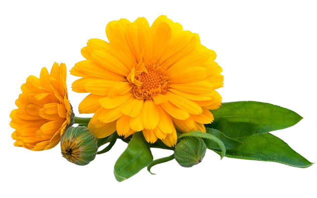

Caléndula (Calendula officinalis)
La caléndula es una planta herbácea perenne que cuenta con varios tallos erectos, hojas oblongas y flores de color amarillo anaranjado. Su nombre científico Calendula officinalis proviene del latín Calendae, que significa primer día del mes y hace referencia a la floración una vez al mes de esta planta durante la época estival. Se puede tomar como infusión.
Características Morfológicas
Hierba anual o bianual de 30 - 50 cm de altura, con vello fino y suave. Hojas en forma de espátulas, de 5 - 10 cm de longitud, de bordes lisos o ligeramente dentados. Capítulos terminales simples, amarillo-anaranjadas, de 5 - 10 cm de diámetro. Fruto pequeño, seco y algo espinoso.
Sustrato para la Caléndula
Caléndula no requiere fertilización y en realidad podría florecer menos con un exceso de nutrientes en el suelo. Esto es especialmente cierto si la planta se cultiva en un rico suelo de jardín. A algunos jardineros con suelos más pobres les gusta agregar un poco de fertilizante para asegurarse de que la planta tenga todos los elementos que necesita. Caléndula le gusta los fertilizantes de liberación lenta, por lo que es mejor usar abono orgánico o mantillo. Estos mejoran la transpiración de gases, aíslan térmicamente la planta y liberan lentamente materiales orgánicos adicionales al suelo. Recuerde dejar un espacio vacío alrededor de la base de la planta, porque si el mantillo está en contacto directo con la planta, podría provocar la pudrición de la raíz. No agregue fertilizante: 1) para secar el suelo, podría dañar el sistema radicular. 2) durante la temporada de crecimiento, ya que podría dificultar la producción de flores.
Riego de la Caléndula
Un régimen de riego adecuado garantizará la máxima floración. Mantenga la tierra húmeda (pero no empapada) todo el tiempo durante la fase de establecimiento. Después, riegue las plantas una vez a la semana y tenga en cuenta que caléndula requiere aproximadamente 2,5 cm de agua a la semana. Caléndula florece mejor cuando los 15 cm superiores del suelo están uniformemente húmedos. Caléndula es un poco sensible al riego excesivo porque la humedad crea condiciones favorables para los patógenos de las raíces. Riegue generosamente, pero deje que se sequen los 5 cm superiores de la tierra antes de volver a regar las plantas.
Poda de la Caléndula
Caléndula es una planta herbácea perenne y vibrante que destaca por sus brillantes flores parecidas a las margaritas. Para mantener el florecimiento de caléndula, es esencial deshojar con regularidad las flores marchitas, lo que fomenta una floración continua. Recorte el follaje a principios de primavera para estimular el crecimiento fresco. La poda óptima tiene lugar desde principios de primavera hasta finales de otoño, coincidiendo con la fase activa de la planta. La poda de caléndula favorece la circulación del aire y disuade a las plagas, garantizando un robusto despliegue de sus flores medicinales. La poda de caléndula favorece un porte más arbustivo, lo que puede conducir a un crecimiento más vigoroso y a una forma bien cuidada, garantizando que la planta se mantenga compacta y atractiva. La eliminación regular de las flores marchitas, conocida como deadheading, también puede estimular la floración continua. La poda a principios de la primavera es ideal para caléndula, ya que ayuda a eliminar el follaje muerto o dañado de la temporada anterior y fomenta el crecimiento nuevo. Este momento coincide con el ciclo de crecimiento natural de la planta, ya que caléndula empieza a crecer activamente durante este periodo. La poda de finales de otoño es beneficiosa para dar forma a la planta y prepararla para el invierno eliminando el follaje viejo y las flores marchitas. También evita la acumulación de enfermedades y plagas que puede producirse en el material vegetal en descomposición. Durante el periodo vegetativo, la eliminación regular de las flores marchitas puede animar a caléndula a producir más flores y prolongar el periodo de floración.
Pais de origen
La caléndula (Calendula officinalis), también conocida como caléndula común o caléndula de jardín, es originaria de la región del Mediterráneo. Esta planta se ha cultivado ampliamente y se ha naturalizado en muchas partes del mundo debido a su utilidad ornamental y medicinal. Su distribución nativa abarca principalmente las áreas del sur de Europa, el norte de África y el suroeste de Asia.